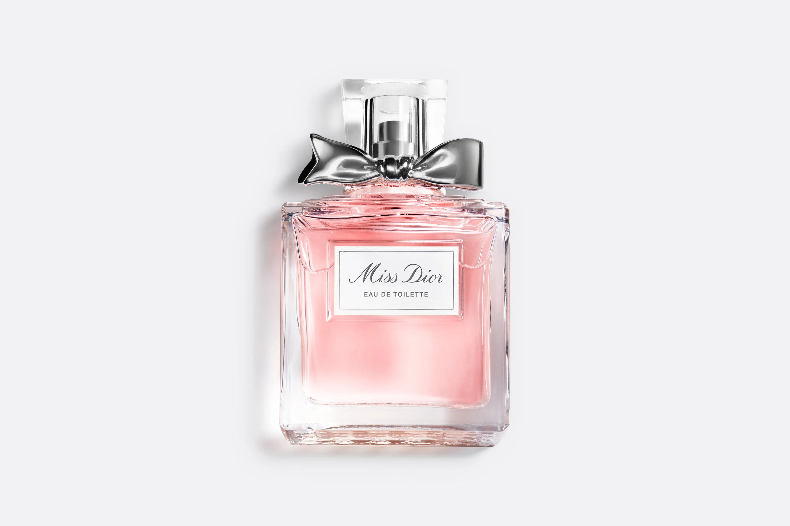
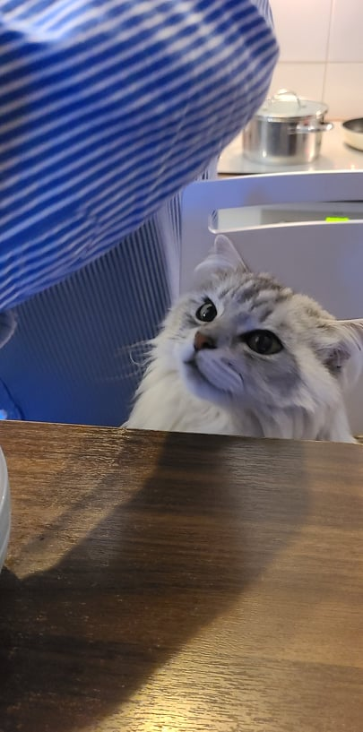
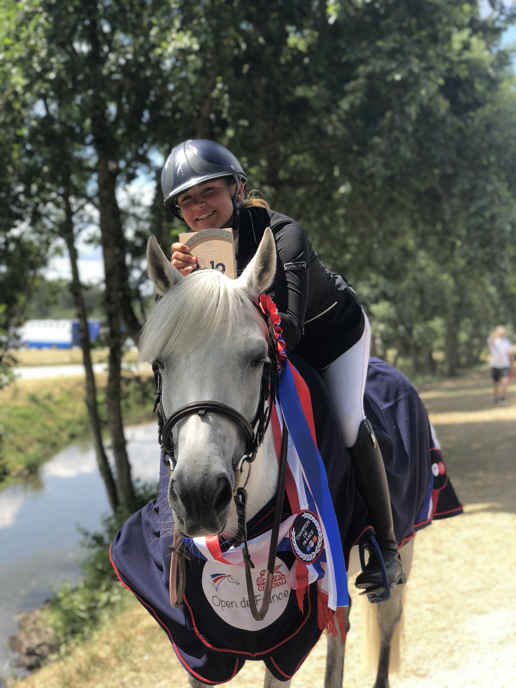

My name is Victoria, I have 18 years old. I'm so glad to share you my profile with this amazing course : Le wagon! If I have to present myself in few words I would say that I'm a kind and humble person. I love to spend time with friends or family. I'm particularly funny ( words of my friends ;) ) and I enjoy life. What is better than discover someone with a website? Read my website and you will know me ( perhaps.. ;) ) I'm currently a student at ESSEC Business School.
Discover VictoriaMy hobbies are very important to me, they are rythming my life. Yes, some hobbies can be strange but I don't choose it !
Fashion and luxury represent a big part of my life.I'm passionate about since I was a child. This sector represent the dream, the beauty, the "Savoir Faire Français" but also the synergy of million people. This sector is not only dream but an association of thousand people to conserve the tradition and the heritage of Luxury. I'm glad to share that I got an internship at Dior, the beginning of a long road !
Her name is Laika, yes like the first Dog that went into space. I love her so much. She has 7 years old ans is not a kitten anymore :(. It can be weird to talk about my cat in my website but I assure you that she is my whole life. People with animals would probably understand my point of view. I lived in the south of france, but now I'm in cergy cause of my studies, I don't see my kitten anymore but she still in my heart.
I practiced many sports in my life and all in competition. For exemple, ski; dance; gymnastique; swim; Horse ridingski. I have been riding since I was 9 years old. Every week I had a competion and sometimes, far of my home. At the age of 15 years old my mom and my dad bought me a horse. Her name is toscane, I began my story with her. This story brought me a lot of love , success, dignity, hapinnes and many others things... The biggest competition that I played was the french championship at 600km from my home. I worked so hard during 2 years and finally I've been champion of france in 2019 !. Competition is for me transcendance and perseverance, theses years taught me a lot.
